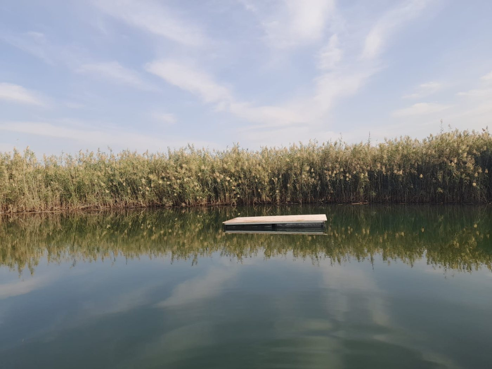
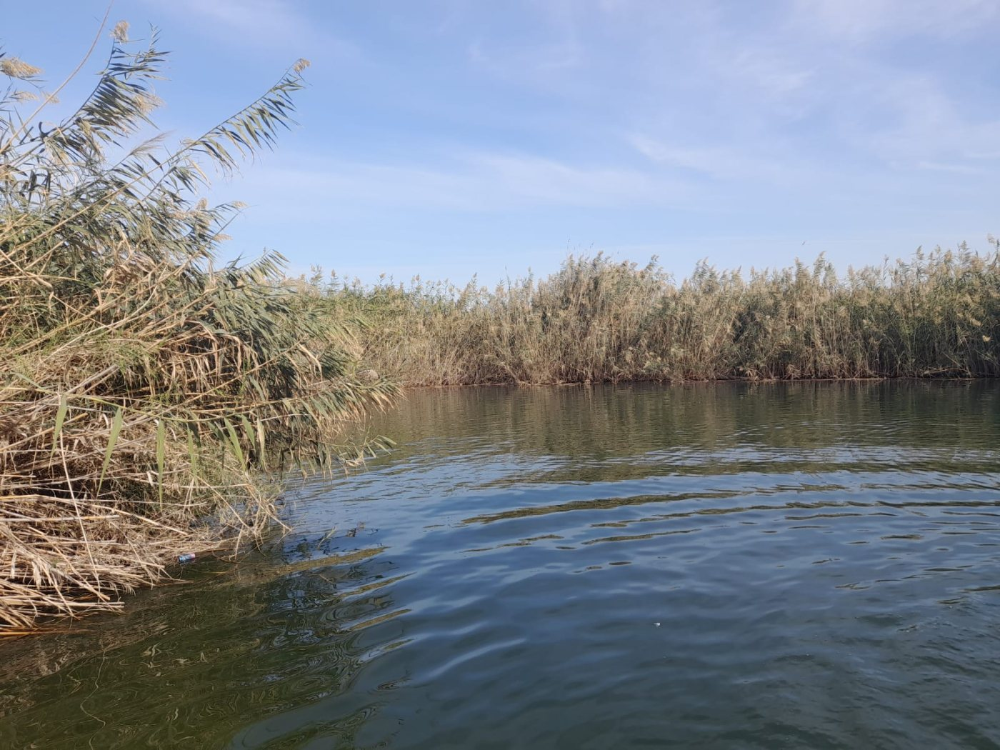
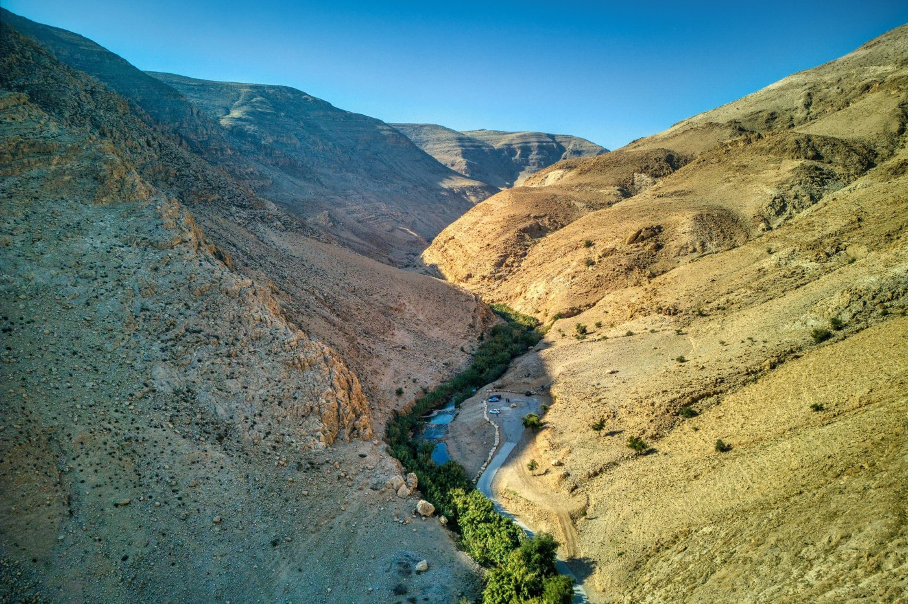
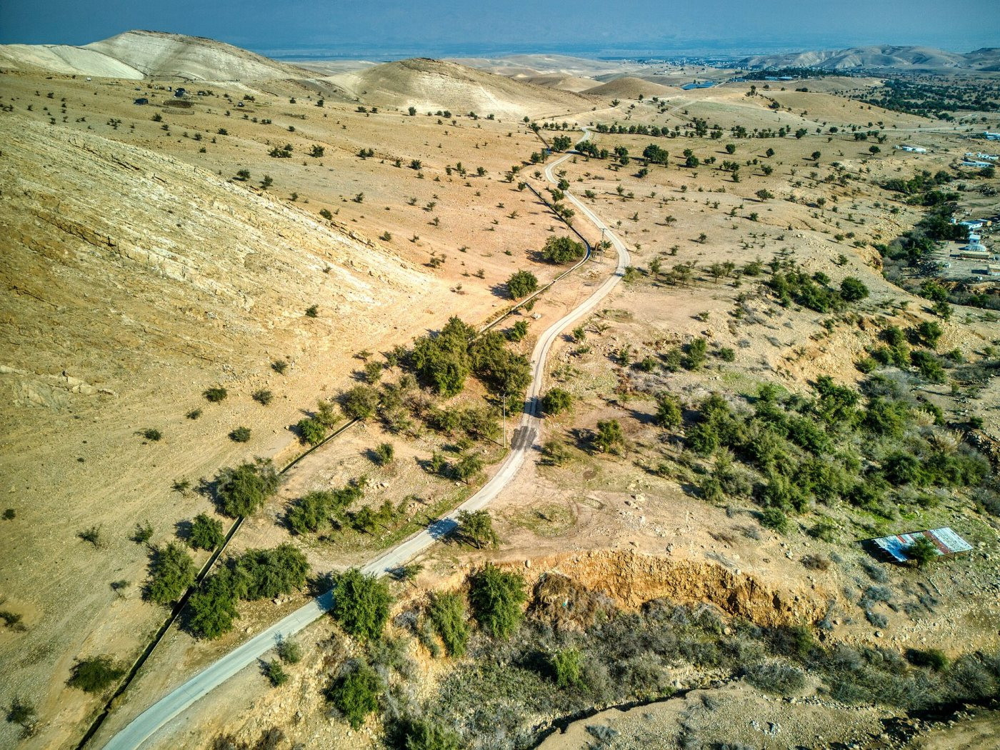
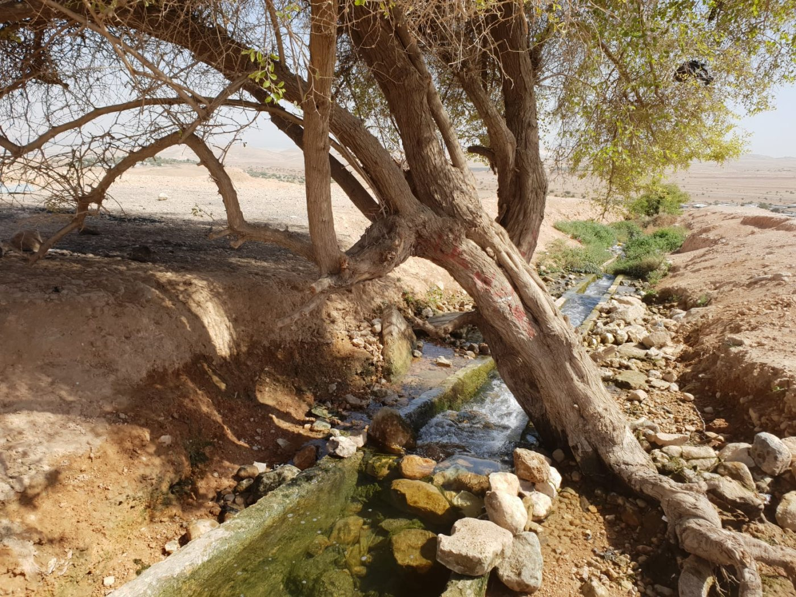
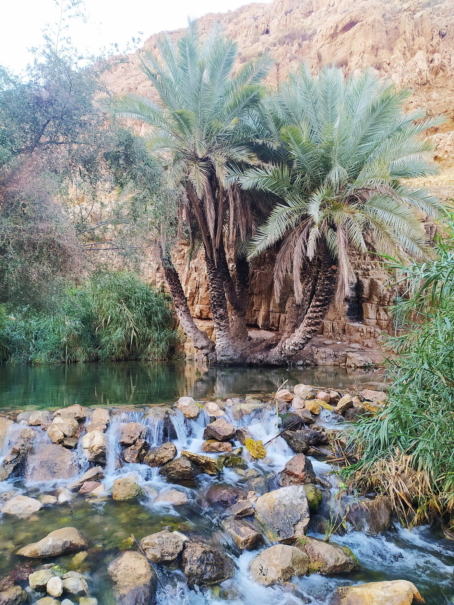
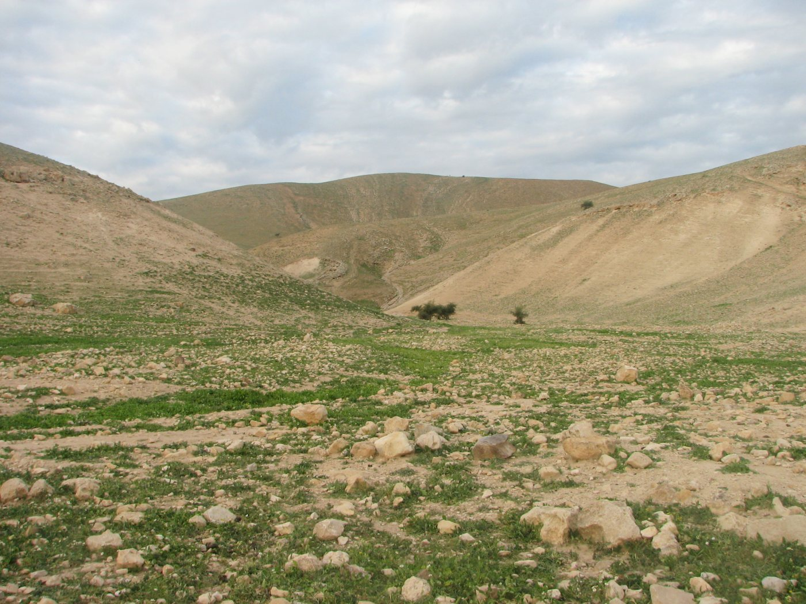

חומרי גלם: סרטון יריד התעסוקה בבקעת הירדן
חומרים להפקת סרטון מאפס. הדף קל לטלפון, התמונות נטענות בגלילה. לחיצה על קובץ פותחת או מורידה אותו.
1. בריף
brief-fromzero.txt
הבריף לקודקס, כפי שנשלח.
הבריף לקודקס, כפי שנשלח.
2. דף עובדות
facts.txt
יום שלישי, 5.1.2027, 10:00-13:00
ברחבה ובאודיטוריום, מתנ"ס בקעת הירדן
לפרטים: יואל טוביאנה 054-2022499
משפט סיום: יריד תעסוקה בבקעה. לא קורה כל יום.
יום שלישי, 5.1.2027, 10:00-13:00
ברחבה ובאודיטוריום, מתנ"ס בקעת הירדן
לפרטים: יואל טוביאנה 054-2022499
משפט סיום: יריד תעסוקה בבקעה. לא קורה כל יום.
3. לוגואים של שותפים


4. צילומים אמיתיים
צילומי מקום מקורות פתוחים (CC BY-SA). שם הצלם, קישור והרישיון המדויק של כל צילום עדיין ממתינים ויתווספו ברגע שיגיעו. אל תפרסמו לפני שהייחוס מלא.


צילום 02ייחוס: ממתין


צילום 04ייחוס: ממתין


צילום 08ייחוס: ממתין


צילום 09ייחוס: ממתין


צילום 10ייחוס: ממתין


צילום 12ייחוס: ממתין


צילום 14ייחוס: ממתין
5. גופן
Rubik.ttf (רישיון פתוח OFL)
6. איורי AI, אופציונלי, להמחשה בלבד
חשוב: כל התמונות כאן נוצרו ב-AI. הן איורים, לא תיעוד של הבקעה, המתנ"ס או היריד, ויש לסמן אותן כאיור. קבצים עם הקידומת ai-.